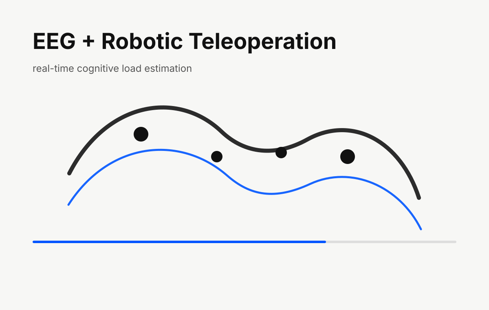

M.S. Thesis · Human-Robot Interaction
Real-Time Cognitive Load Detection for Robotic Teleoperation
A real-time EEG and machine learning framework designed to estimate operator cognitive load during robotic teleoperation and support safer human-robot interaction.

Problem
Teleoperated robots can become risky when the human operator is overloaded, fatigued, or distracted. This project explored whether lightweight EEG sensing could estimate cognitive load in real time and support robot-side safety responses.
Role
Research Assistant, CARES Lab · Wayne State University
Jan 2025 – May 2026
My Contribution
- Built the EEG acquisition and processing workflow using Muse 2 signals.
- Extracted spectral and statistical features from time-windowed EEG data.
- Implemented machine learning models for cognitive load estimation and clustering.
- Connected operator-state monitoring with robotic teleoperation safety concepts.
System Architecture
- Muse 2 EEG streams operator data
- Signal preprocessing and feature extraction
- Machine learning model estimates cognitive load
- Real-time visualization and safety-state output
- Robot control layer can reduce speed, stop, or flag overload
Results
- Built an end-to-end real-time cognitive-load detection pipeline.
- Demonstrated EEG-based operator monitoring for robotic teleoperation scenarios.
- Submitted as M.S. thesis work at Wayne State University.
Why it matters
This project connects core robotics engineering skills—sensing, modeling, control, simulation, and integration—with the type of systems thinking needed for autonomous and humanoid robots.